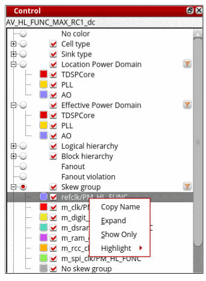
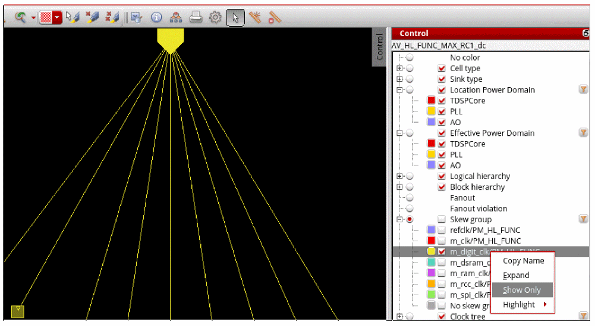
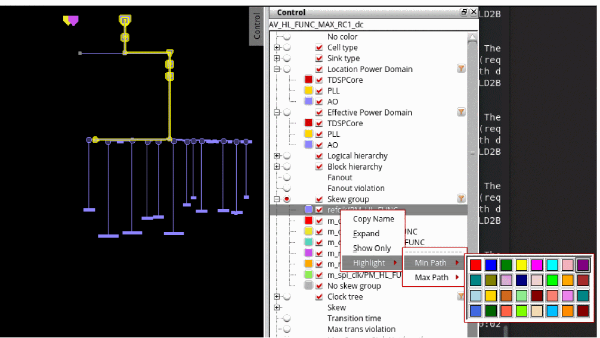
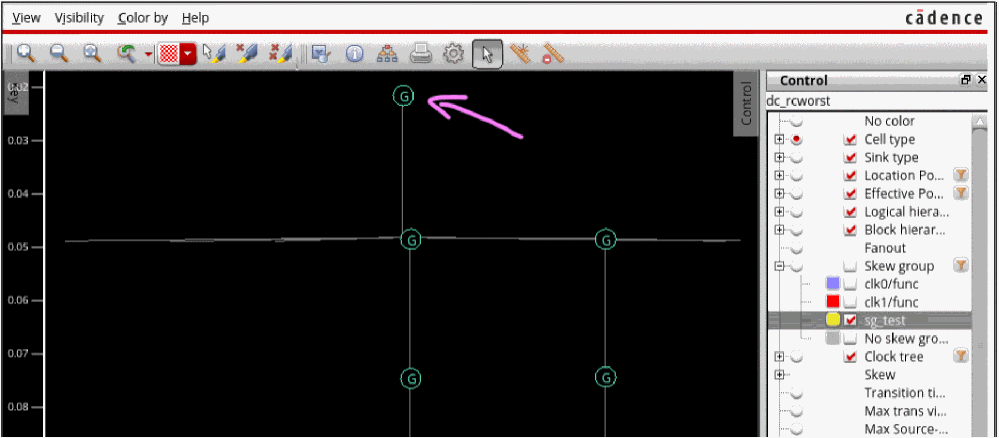
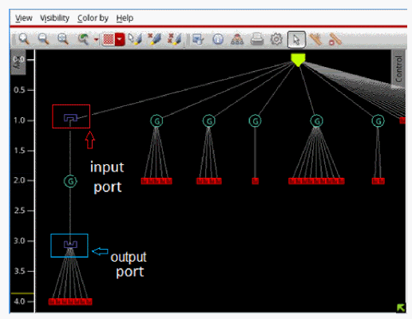

View Skew Groups
In the Control panel of the Clock Tree Debugger, a context menu is provided for the skew groups. When you right-click a skew group, the following options are available in the context menu for viewing, copying the name, expanding, and highlighting the selected skew group:

Option Descriptions
- Copy: Allows you to copy the name of the skew group.
- Expand: Expands all subtrees that pass through the selected skew group in the display area.
-
Show Only: Displays the selected skew group in the display area of the CTD with all the clock convergence points expanded. In the image below, the skew group with yellow color is selected and the convergence points for this skew groups are expanded in the display area.

-
Highlight: Provides the option to highlight the Min Path and Max Path of the selected skew group in a color of your choice from the color picker.

Note: When coloring or displaying by skew group, the source pin is considered part of the skew group if either the input pin it represents or the output pin of the corresponding clock node belongs to that skew group. This ensures that the source pin is visible when other skew groups are hidden.

View Preserved Ports
The following options are provided in the Control panel for viewing preserved ports:
The above options are visible in the Control panel only when using the Unit Delay mode. The input and output port bit markers show gates with preserved input and output ports. For example, in the image below, the new input and output port bit markers show that the gate on the left is in a module with a preserved input port before it and a preserved output port after it.

To hide the port markers, use the View < Simplify < Hide option.
Return to top